Sub-50 in the Snow: My 10K Winter City Run Through the Streets of Sapporo, Hokkaido
A peaceful sunrise run through falling snow, quiet neighborhoods, and the magical winter atmosphere of Hokkaido
 Running through quiet snowy streets during a Sub-50 city run in Sapporo, Hokkaido.
Running through quiet snowy streets during a Sub-50 city run in Sapporo, Hokkaido.
❄️ Sub-50 in the Snow: My 10K City Run Through Sapporo, Hokkaido
“Sometimes the most beautiful moments in life happen when you simply step outside and start running.”
🌅 A Very Early Morning in Sapporo
Some mornings begin quietly, almost unnoticed by the rest of the world.
This morning in Sapporo was one of those moments.
The alarm rang at 4:50 AM, long before sunrise. Outside my window the city was still asleep — streets silent, buildings dark, and the cold northern air resting peacefully over Hokkaido. Yet despite the early hour, I woke up with an unusual sense of excitement.
Today had a simple mission: a 10-kilometer city run through Sapporo, with the hope of finishing Sub-50.
For most runners, a 10K run is a familiar routine. But running in a new city always carries a different feeling. Every street corner becomes part of a new story, every kilometer reveals something unexpected. And this morning, I had the quiet sense that something special might happen.
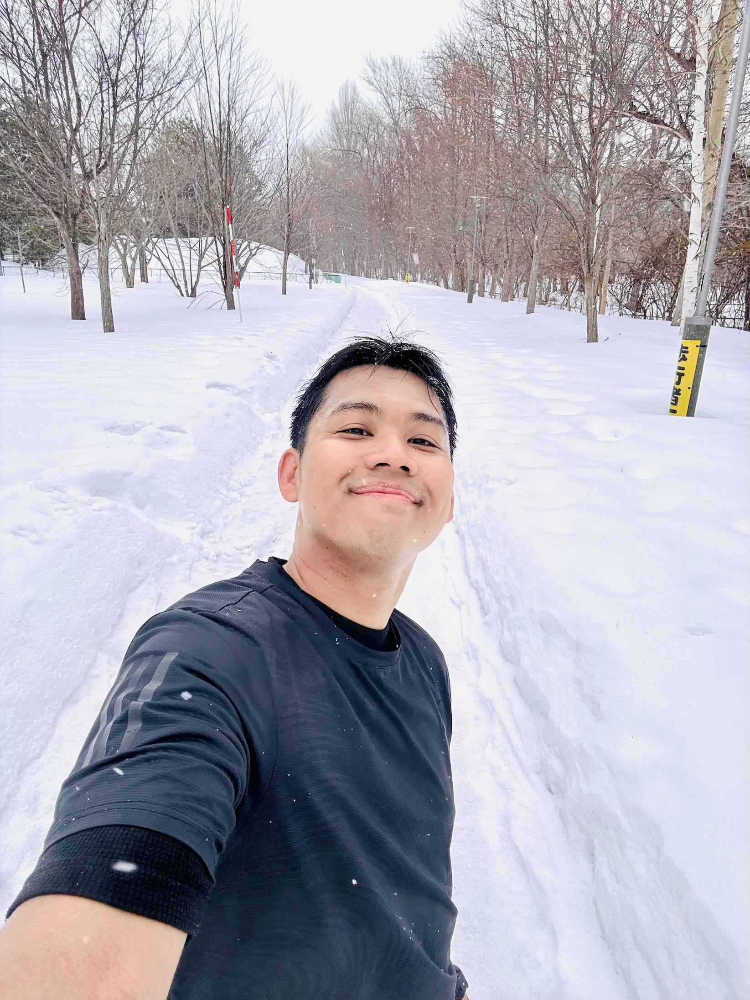
Figure 1: A selfie taken during the run while snow continued falling gently around me. The ground, the trees, and the entire environment were covered in soft white snow. This was my very first time experiencing a city run in a truly cold winter environment. I never expected the snowfall to be this perfect — calm, steady, and magical. At that moment, I realized this route might become one of the most memorable running routes of my life. Thank you, Hokkaido, for giving me such an unforgettable running experience.
After warming up and putting on my running gear, I stepped outside my accommodation and quickly checked the weather app on my iPhone.
And then something unexpected appeared.
The forecast said: Snowing.
I blinked.
Then I checked again.
Still snowing.
For a brief moment I simply stared at the screen, trying to make sure I wasn’t imagining things. It was already March, a time when snowfall in Sapporo usually begins to fade as spring slowly approaches.
Could it really be snowing again?
Curious and slightly hopeful, I opened the door and stepped outside.
And there it was.
Soft snowflakes drifting gently down from the sky.
At that moment I couldn’t help but smile.
The streets were quiet, the air was fresh, and delicate white snow was falling all around me. It felt almost as if the city had prepared a small celebration before the day even began.
Some people chase personal records when they run.
But on mornings like this, it feels as if nature itself is cheering you on.
Standing there for a moment, watching the snow fall under the dim morning lights of Sapporo, I realized something simple but beautiful:
Today’s run was already special — even before the first step had begun.
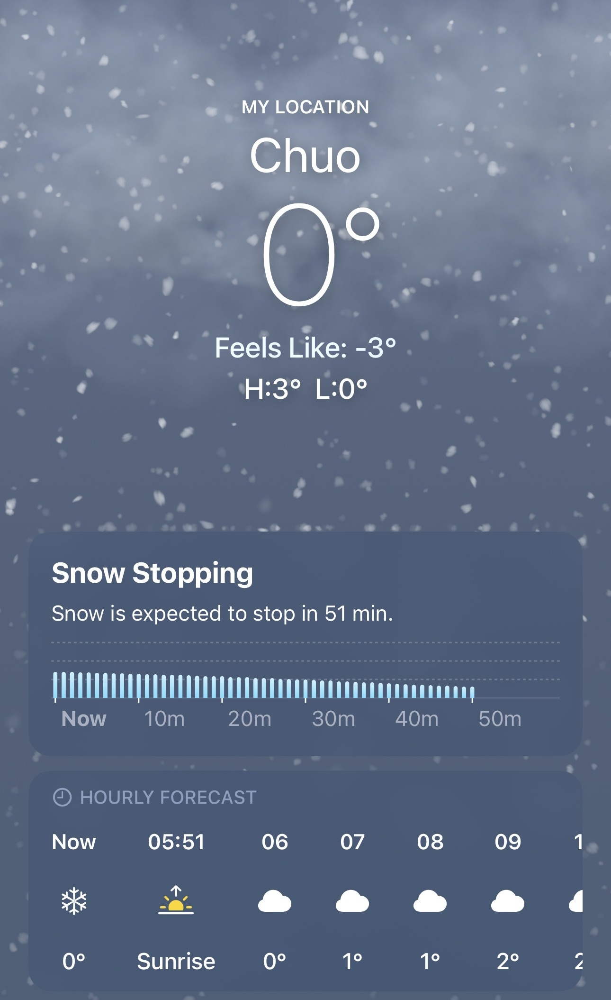
Figure 2: A simple screenshot from my weather application early in the morning. The moment I checked the forecast, I saw something magical — the word “snow” appearing right now. My heart instantly felt excited. Snow in March is never guaranteed, so seeing this notification felt like a small but precious gift from nature. Before even starting the run, I already knew that today would be special. Sometimes the smallest moments — like a weather notification on a phone — can become the beginning of an unforgettable memory.
🏃 The Start — Nakajima Park (KM 0)
I started my run at 5:33 AM.
The starting point was Nakajima Park, one of the most peaceful parks in central Sapporo, located along the Namboku Subway Line.
Early morning runs here feel magical.
The park was quiet.
The trees were lightly covered in snow.
And the air was crisp and clean.
This was the perfect place to begin a winter city run.
🗺️ Route Overview
Below is a kilometer-by-kilometer summary of my Sub-50 winter city run through Sapporo.
Each section of the route offered a slightly different atmosphere — from quiet parks and residential neighborhoods to the snowy streets around Hokkaido University.
| KM | Location / Destination | Route / Street | Experience |
|---|---|---|---|
| KM 0 | Nakajima Park (Start) | Namboku Subway Line Area | Quiet winter park atmosphere. Perfect peaceful start before sunrise. |
| KM 1 | Sapporo PARCO | Odori-Nishi Area | Snowfall becomes slightly heavier while the city slowly wakes up. |
| KM 2 | Tokyu Department Store (Sapporo Station Area) | Odori-Nishi → City Center | Passing through the early morning shopping district covered with fresh snow. |
| KM 3 | Higashi 8-chome Intersection | Kita-5-jo Teine-dori Avenue | Cold air, steady rhythm, and quiet streets before the rush hour begins. |
| KM 4 | Sapporo Kosei High School | Shinsei Park Area | Snow-covered trees and calm neighborhood scenery. |
| KM 5 | Bikkuri Donkey Mikaho | Kita-15-jo Higashi Street | Halfway point of the run — passing local restaurants and residential streets. |
| KM 6 | National Route 5 | Residential Sapporo Area | Authentic local morning life — residents clearing snow and starting their day. |
| KM 7 | Kita-24-jo Nishi | Local Neighborhood Streets | Smooth pacing, cool air, and the peaceful rhythm of winter running. |
| KM 8 | Hokkaido Sapporo Technical High School | Shinkawa-dori Avenue | Turning back toward the city with snow gently falling. |
| KM 9 | Hokkaido University Area | Kanjo-dori Avenue | The most beautiful section — snow-covered trees and white roads like a winter dream. |
| KM 10 | Sapporo Station (Finish) | Kita-8-jo-dori Intersection | Strong finish and the moment the Sub-50 goal becomes reality. |
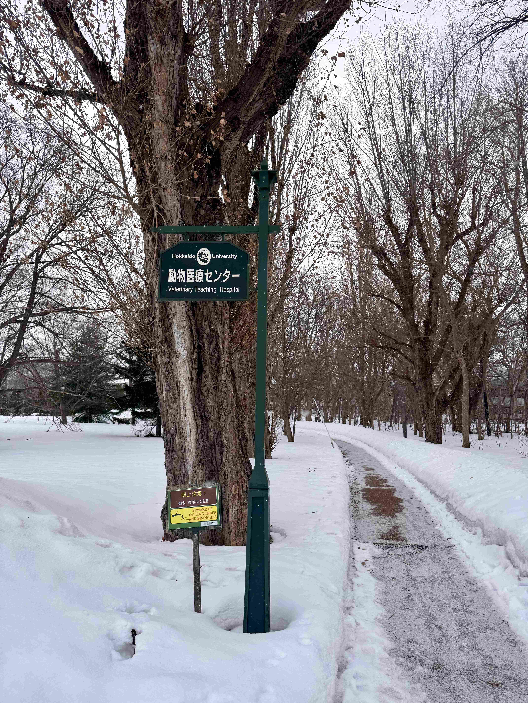
Figure 3: The beautiful running route inside the area around Hokkaido University. Snowflakes were slowly falling from the sky while the entire road was quietly covered in white. Just seeing the snowfall alone already made me happy, but experiencing it while running made the moment even more special. The peaceful atmosphere, the soft sound of snow under my shoes, and the calm winter air created a perfect city running experience. This part of the route truly confirmed why Hokkaido is one of the most amazing places for winter running.
KM 1 — Sapporo PARCO
After leaving Nakajima Park, I ran north toward the city center.
By the time I reached Sapporo PARCO, the snowfall had become slightly heavier.
Snowflakes drifted through the early morning lights of the city.
The streets were still quiet.
Running through a city while it slowly wakes up is one of the things I love most about city running.
KM 2 — Tokyu Department Store (Sapporo Station Area)
Continuing along Odori-Nishi, I ran toward the Sapporo Station area.
The second kilometer ended near Tokyu Department Store, not far from several small jewelry shops in the district.
Even though it was still early morning, the city already felt alive in a subtle way.
Snow continued falling gently, covering sidewalks and rooftops.
KM 3 — Kita-5-jo Area
From there, I followed Kita-5-jo Teine-dori Avenue, heading northeast.
The third kilometer ended near the Higashi 8-chome area.
At this point, my body felt fully warmed up.
My breathing was steady.
The cold air hitting my face felt refreshing.
KM 4 — Near Sapporo Kosei High School
Next, I ran alongside Shinsei Park, a quiet green space that looks especially peaceful during winter.
Snow was now clearly visible on the trees and sidewalks.
The fourth kilometer finished near Sapporo Kosei High School.
The city was beginning to wake up, but the streets were still mostly empty.
KM 5 — Bikkuri Donkey Mikaho
Continuing along Kita-15-jo Higashi Street, I passed Sukiya Sapporo Mikaho Branch.
The smell of early morning restaurants preparing for the day drifted through the cold air.
Soon after, I reached Bikkuri Donkey Mikaho, marking the 5K point.
Halfway.
Still feeling strong.
KM 6 — National Route 5
After passing Mikaho Park, I continued running through a quieter residential neighborhood.
This part of the run felt very different from the city center.
By the time I reached National Route 5, I realized something I love deeply about city running:
You begin to see the real daily life of local people.
Residents were clearing snow in front of their homes.
Some were walking to work.
Others were quietly preparing for the day.
Japanese neighborhoods are incredibly peaceful and orderly.
Houses are clean.
Gardens are neat.
And snow had accumulated beautifully in front of almost every home.
KM 7 — Kita-24-jo Nishi
From Route 5, I continued along Kita-24-jo Nishi Street.
At this point, I felt completely comfortable with my pace.
Today I intentionally controlled my effort by monitoring heart rate.
Instead of pushing aggressively, I kept my pace around the high 4:50/km range.
Very different from running in Bangkok, where heat and humidity often push heart rate much higher.
Here in Hokkaido, the cool air made everything feel easier.
KM 8 — Hokkaido Sapporo Technical High School
I turned back toward the city center, passing a McDonald’s intersection, and continued along Shinkawa-dori Avenue.
The 8K mark arrived near Hokkaido Sapporo Technical High School.
From here, I followed Kanjo-dori Avenue toward Hokkaido University.
As I approached the university area, I passed the Hokkaido University Animal Medical Center.
And then something truly special happened.
KM 8 → KM 9 — The Most Beautiful Part of the Run
This section of the run became the most memorable moment of the entire morning.
The road ahead was completely covered in fresh white snow.
Small trees along the road were wrapped in soft snow.
Snowflakes continued falling quietly from the sky.
Everything looked calm.
Everything looked peaceful.
Everything looked perfect.
At that moment, I slowed down intentionally.
Not because I was tired.
But because I wanted to absorb every second of this moment.
I looked around and thought:
“Is this real?”
It felt like running inside a dream.
And suddenly I realized something:
This is one of the reasons I want to keep living.
Moments like this.
Simple.
Beautiful.
Peaceful.
I think I have truly fallen in love with Hokkaido.
KM 9 → KM 10 — Hokkaido University Ginkgo Avenue to Sapporo Station
After leaving the university area, I ran alongside the famous Hokkaido University Ginkgo Avenue.
Even in winter, the avenue carries a special atmosphere.
From there, I pushed gently toward the finish.
The final kilometer brought me back toward Sapporo Station, finishing near Kita-8-jo-dori intersection.
⏱️ Final Result — Sub-50 Achieved
Today’s run statistics:
Distance: 10.11 KM
Time: 49:31
Pace: 4:54 / KM
Average Heart Rate: 143 BPM
Calories: 762 kcal
And just like that…
I completed my first Sub-50 10K in Hokkaido.
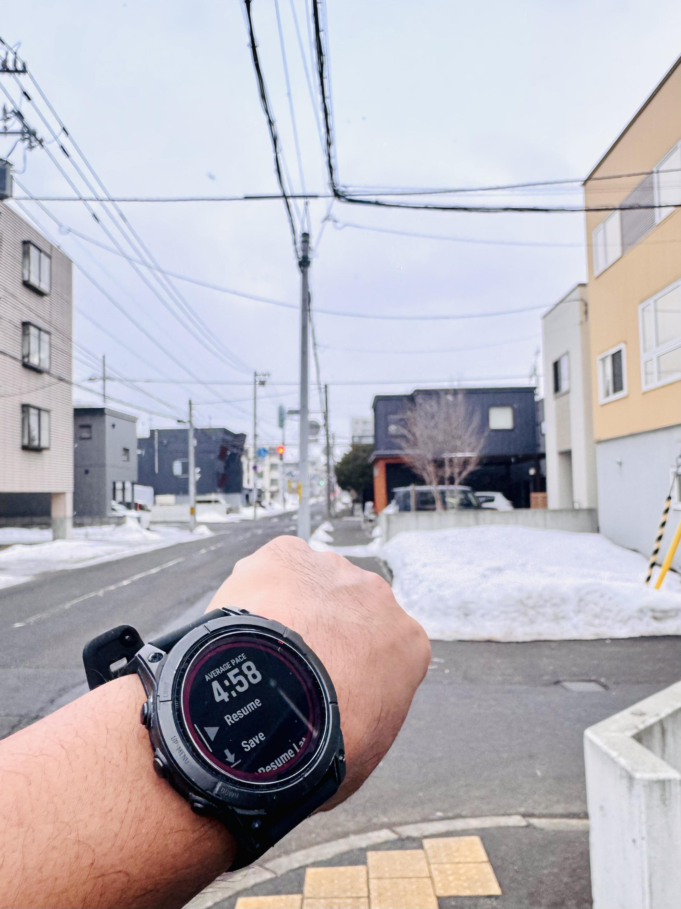
Figure 4: A quick glance at my Garmin watch while running through the snowy streets of Sapporo. Normally during a 10K run I would focus heavily on maintaining speed, but today was different. The scenery around me was simply too beautiful to rush through. I wanted to keep a steady pace without pushing too aggressively, allowing myself to fully enjoy the winter atmosphere. After all, reaching the 10K destination was important — but the journey and the scenery along the route were equally valuable.
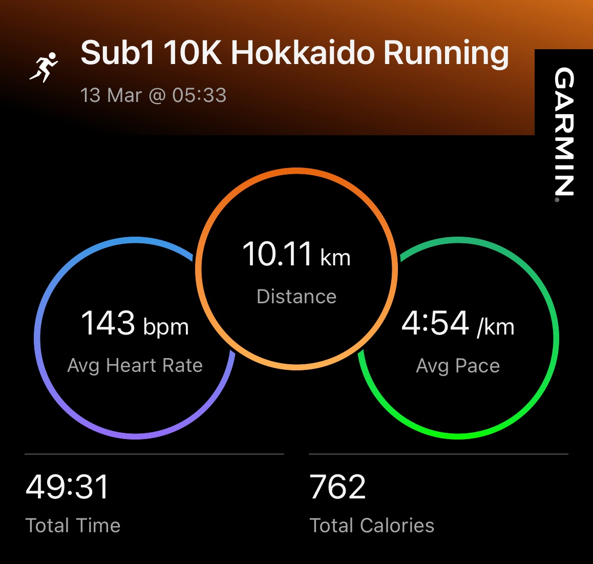
Figure 5: The official running statistics recorded by the Garmin application after completing today's city run. The final distance was 10.11 kilometers with a finishing time of 49 minutes and 31 seconds. Average pace was 4:54 per kilometer with an average heart rate of 143 bpm and total energy expenditure of 762 calories. Achieving a Sub-50 10K run in the snowy streets of Hokkaido made the accomplishment even more meaningful.
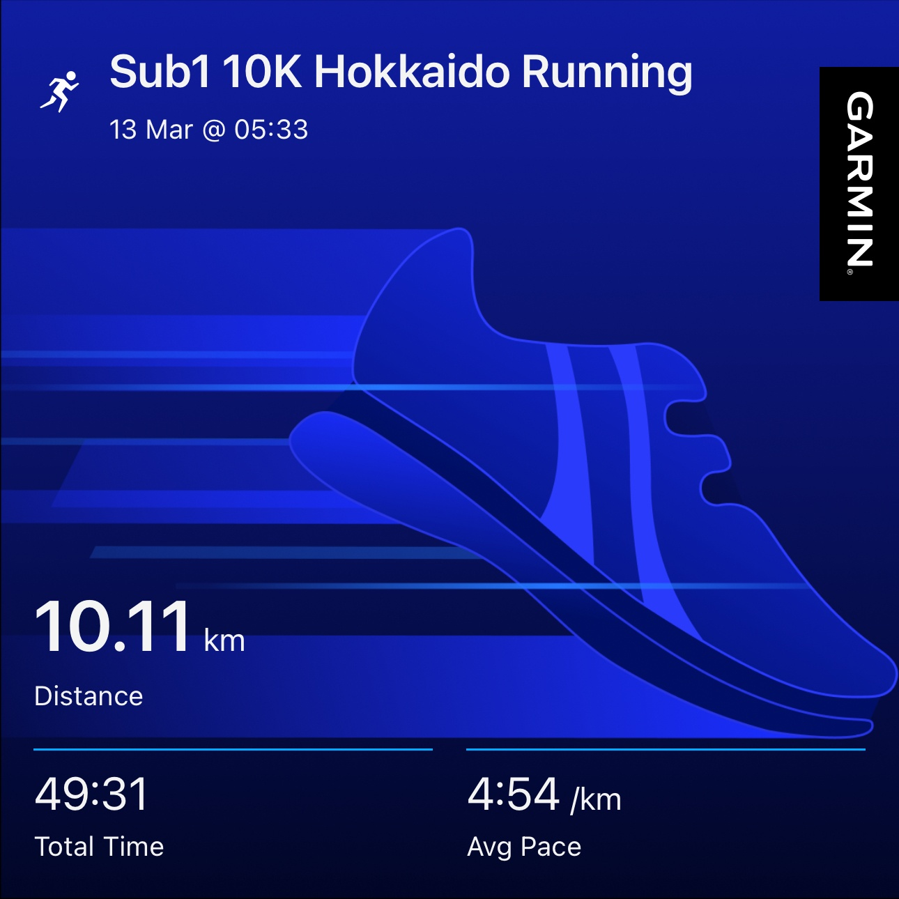
Figure 6: Another visualization of the same running data displayed in a different interface style within the Garmin application. It’s always interesting to see how the same performance metrics can be presented in multiple formats. Looking at these numbers after the run reminded me how rewarding consistent training can be, especially when combined with such a beautiful running environment.
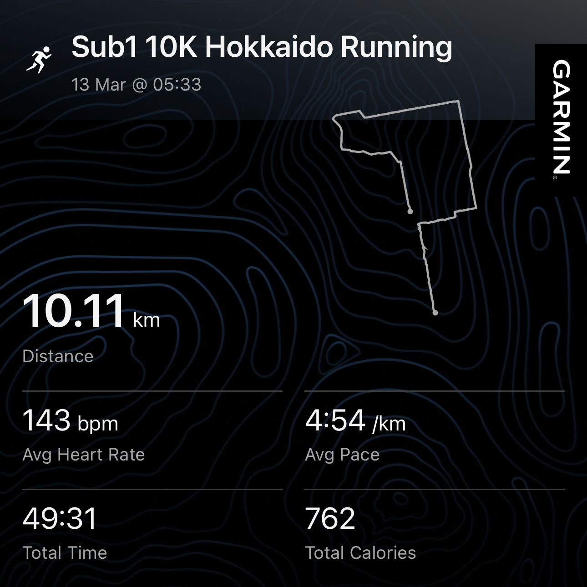
Figure 7: Yet another summary screen of today's run statistics from Garmin. Even though the numbers remain the same, each display tells the story of the effort, rhythm, and endurance behind the run. For me, these statistics are more than data — they are memories attached to the experience of running through falling snow in Sapporo.
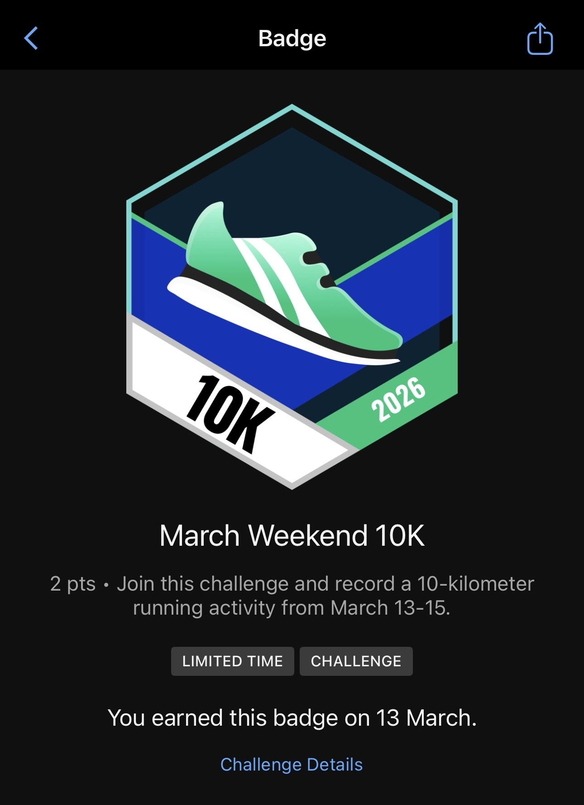
Figure 8: A small but satisfying reward from Garmin — the 10K running badge earned from completing this city run. In addition to the unforgettable snowfall that nature gave me today, Garmin also rewarded the effort with a digital achievement worth two points. It may seem like a small badge, but for runners, these tiny milestones often carry meaningful motivation.
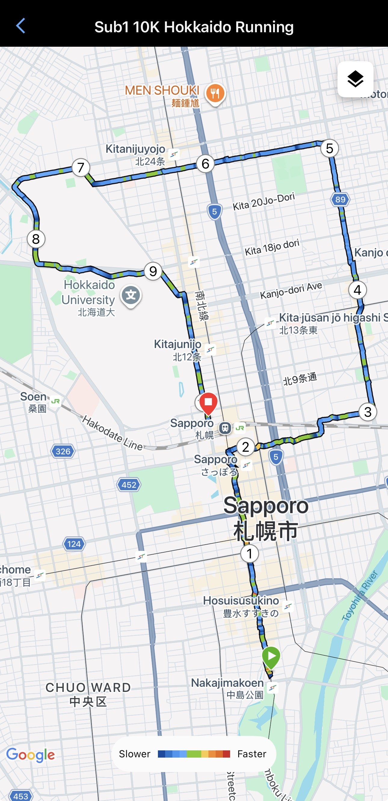
Figure 9: The running route drawn using Google Maps in terrain mode. This visualization shows the complete path of the 10K city run through Sapporo that morning. Seeing the route from above makes it easier to appreciate how the run connected parks, neighborhoods, and university areas into one continuous winter adventure.
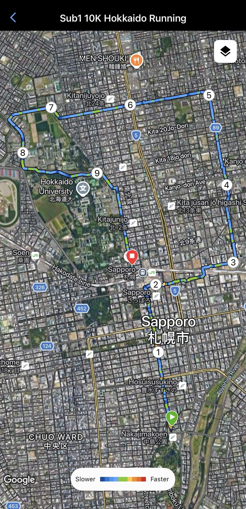
Figure 10: The same route visualized again, this time using satellite imagery from Google Maps. From this perspective, the path of the run becomes even more vivid, showing the surrounding buildings, roads, and green spaces that formed the backdrop of the journey. Looking at this map later made me relive each kilometer of the run.
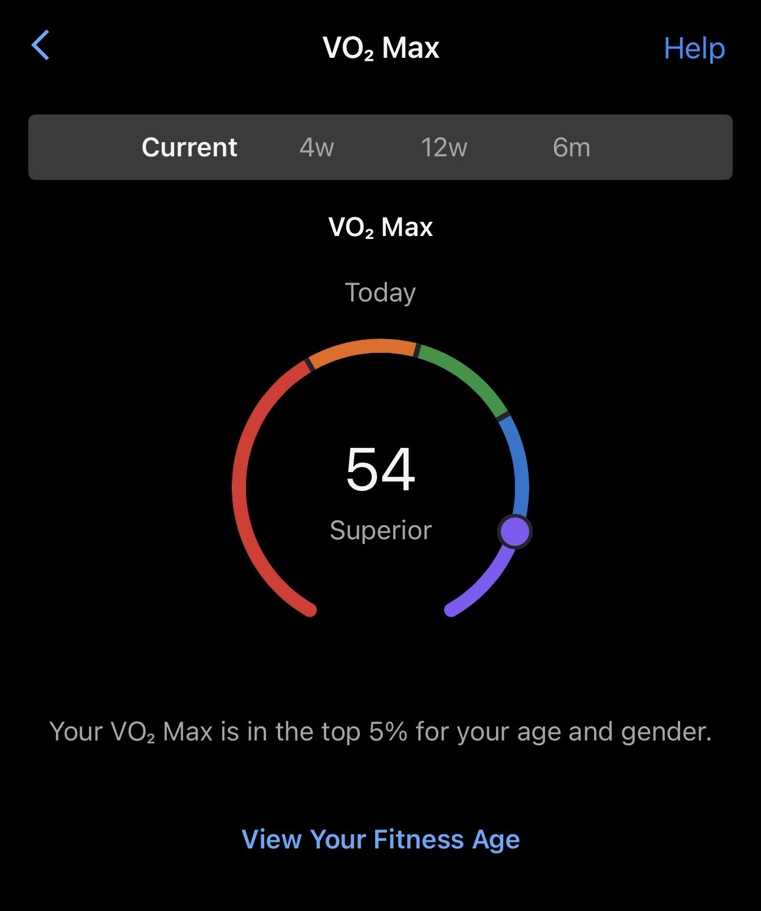
Figure 11: My VO₂ Max reading recorded that morning, showing a value of 54. This number had decreased slightly from my previous peak of 57 after completing the UTMB Inthanon race last year. However, it still remains within the excellent performance zone. Over time, I have learned not to focus too obsessively on performance metrics. What matters most is continuing to run with enjoyment, without pressure, and maintaining a healthy balance between effort and happiness.
❤️ Why This Run Meant So Much
This run meant more than just numbers.
Over the past few years, I have worked extremely hard.
Sometimes too hard.
Life, work, responsibilities — everything can become overwhelming.
But running through the snowy streets of Sapporo reminded me of something important:
Nature has an incredible way of restoring our energy.
Snow falling quietly from the sky.
Empty streets before sunrise.
Cold air filling the lungs.
These moments are powerful.
They remind us that life is still beautiful.
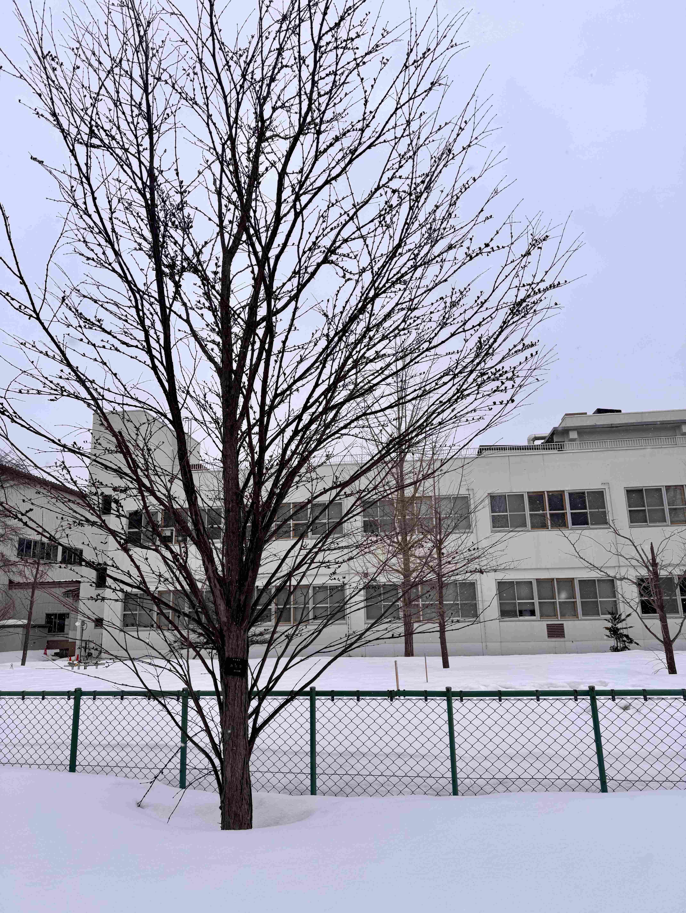
Figure 12: Another view from inside the Hokkaido University campus during the run. Snow covered the sidewalks, the grass, and even the edges of the running path, turning the entire environment into a peaceful winter landscape. Moments like this made me slow down slightly, not because I was tired, but because I wanted to fully absorb the beauty surrounding me. Running through scenery like this feels less like exercise and more like a quiet journey through nature.
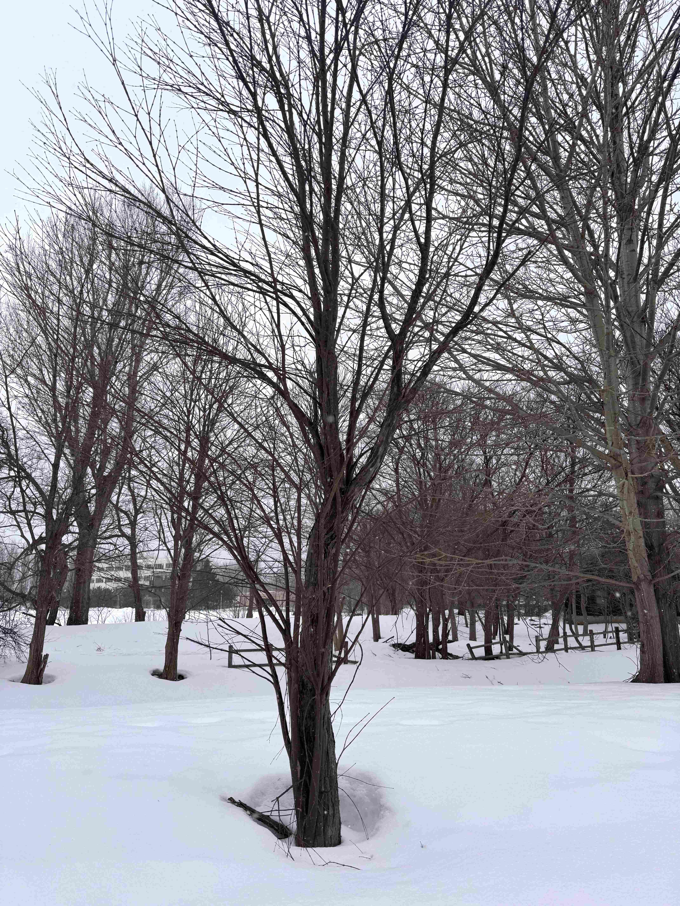
Figure 13: The snowy route continues deeper into the university grounds. According to the map, the building nearby is the Research Institute for Electronic Science at Hokkaido University. Even within an academic environment known for advanced research and technology, the surrounding winter landscape created an atmosphere of calm and simplicity. Snow quietly covered the road and nearby trees, making the entire area feel peaceful and inspiring — the kind of place where both ideas and running thoughts can flow freely.
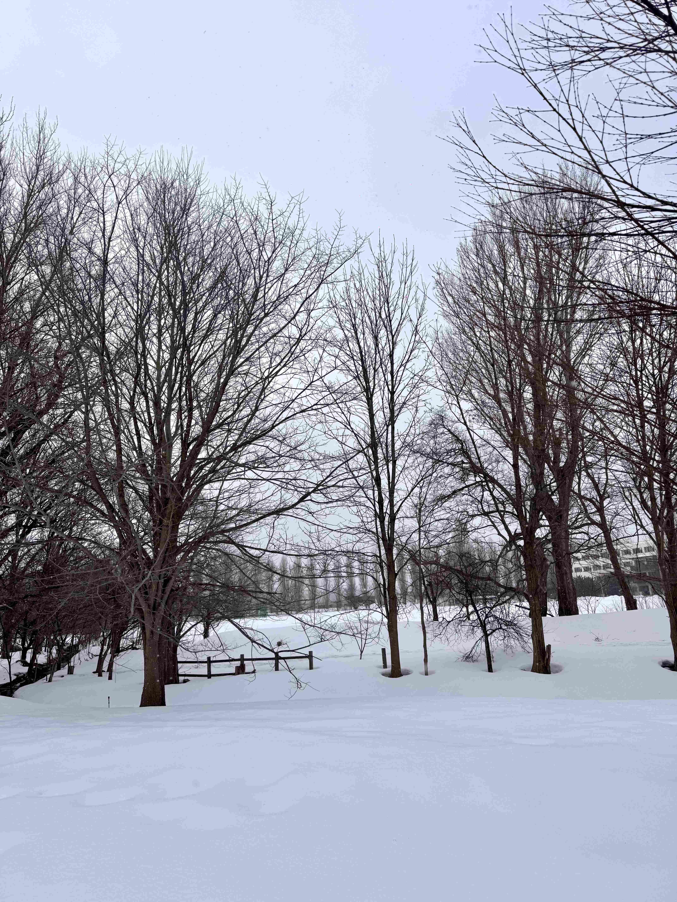
Figure 14: Yet another beautiful stretch of road inside Hokkaido University during the run. The quiet winter campus felt almost timeless, as if the entire place had paused for a moment under the gentle snowfall. The snow lining both sides of the path created a soft white frame guiding the way forward. Running through such a peaceful environment reminded me how powerful simple moments can be when combined with movement and nature.
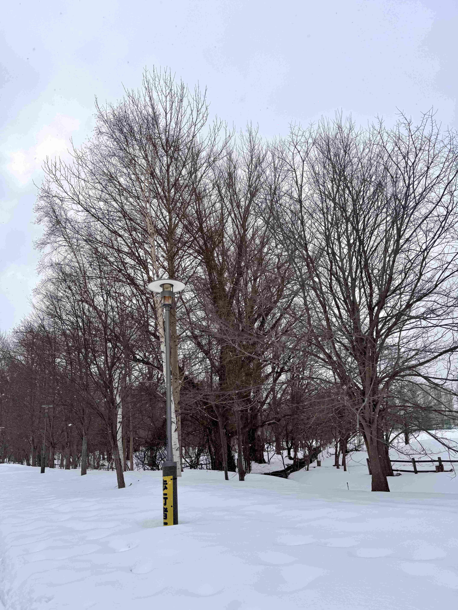
Figure 15: One more unforgettable section of the running route inside Hokkaido University. The road ahead remained quiet, covered in soft snow, while small trees on both sides stood gently wrapped in winter white. Snow continued to fall steadily from the sky, creating a peaceful rhythm that perfectly matched the cadence of my running steps. At that moment, it felt as if the entire campus had transformed into a private winter trail — a rare and beautiful setting for a morning city run.
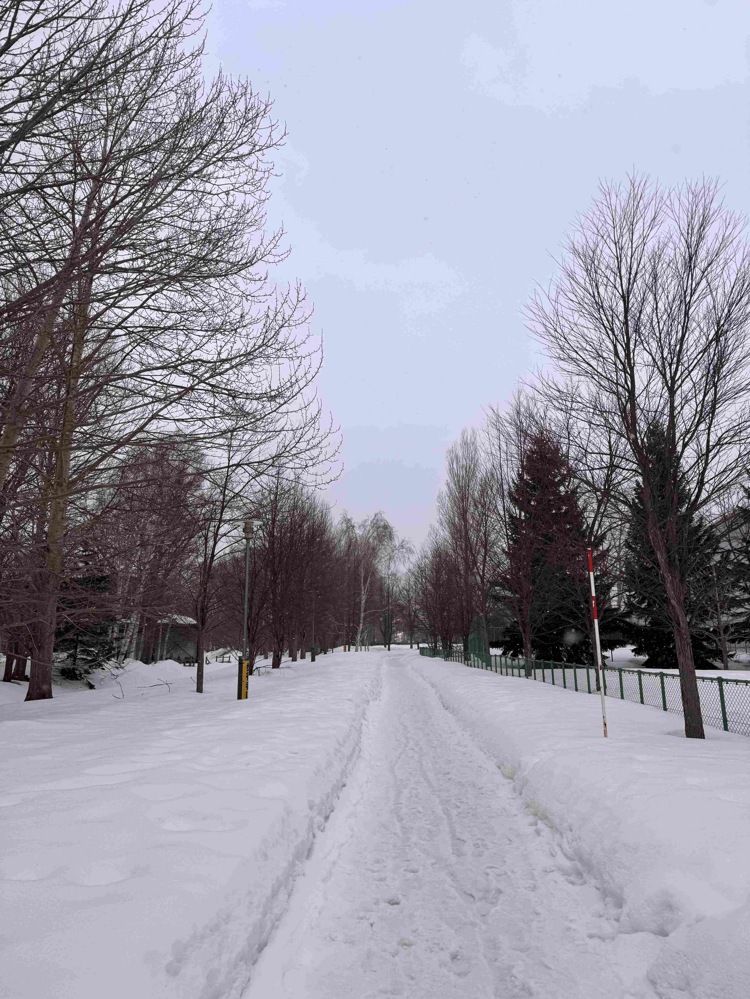
Figure 16: One last memory from this unforgettable Hokkaido city run. Looking back at this moment, I feel thankful — thankful for the snow, the beautiful route, and for myself for choosing to wake up early and start running that morning. Sometimes happiness is simply about stepping outside, moving forward, and appreciating the world around us. Thank you, Hokkaido. I hope to return and run these snowy streets again someday.
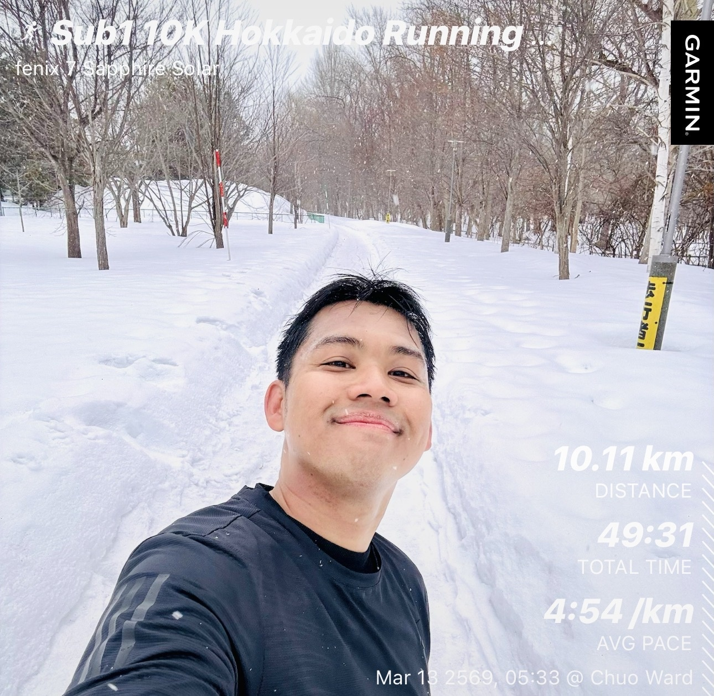
Figure 17: A final selfie taken along the running path near Hokkaido University before completing the city run. Snow continued falling softly while the quiet winter road stretched behind me. At that moment, I felt deeply grateful for everything that happened during this run — the snow, the cold air, the peaceful sky, and the gentle winter wind. I even exchanged smiles with a few local runners along the way, small moments that made the experience even more heartwarming. Running has always been a personal journey, but sometimes it also connects us with others in unexpected ways.
🌨️ Thank You, Hokkaido
Today was not just a run.
It was a reminder.
A reminder to slow down.
A reminder to appreciate life.
A reminder to keep moving forward.
Thank you, Hokkaido, for giving me this moment.
I promise I will continue running.
I promise I will continue living fully.
And I know one day, I will come back here again.
Until next time.
Hokkaido — with love.
Citation
Panboonyuen, Teerapong. (March 2026). Sub-50 in the Snow: My 10K Winter City Run Through the Streets of Sapporo, Hokkaido. Blog post on Kao Panboonyuen.
https://kaopanboonyuen.github.io/blog/2026-03-13-sub-50-in-the-snow-my-10k-winter-city-run-through-the-streets-of-sapporo-hokkaido
For a BibTeX citation:
@article{panboonyuen2026sub50snowrun,
title = "Sub-50 in the Snow: My 10K Winter City Run Through the Streets of Sapporo, Hokkaido",
author = "Panboonyuen, Teerapong",
journal = "kaopanboonyuen.github.io/",
year = "2026",
month = "Mar",
url = "https://kaopanboonyuen.github.io/blog/2026-03-13-sub-50-in-the-snow-my-10k-winter-city-run-through-the-streets-of-sapporo-hokkaido"
}
Teerapong Panboonyuen
My research focuses on leveraging advanced machine intelligence techniques, specifically computer vision, to enhance semantic understanding, learning representations, visual recognition, and geospatial data interpretation.